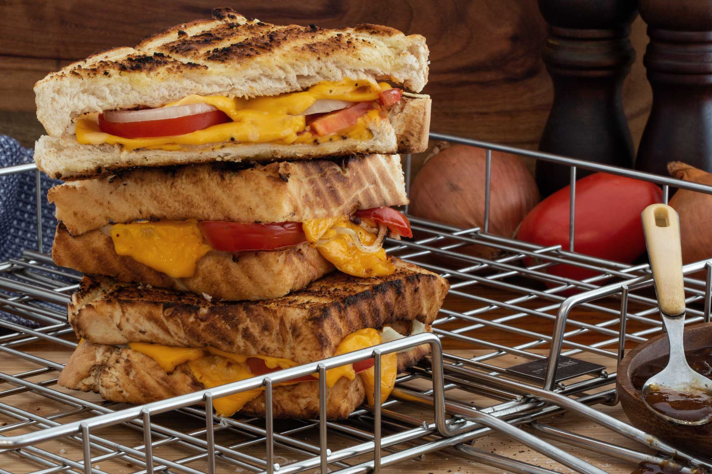

Braaibroodjies

Description
No South African Braai would be complete without a traditional Braaibroodjie.
Quick, simple and tasty as anything.
Ingredients
- 12 Slices of White Bread
- 12 Slices Cheese
- 2 Large Onions Cut in Rings
- 3 Tomatoes Sliced
- Butter
- Salt and Pepper
Steps
- Get yourself a beer and tell your wife that you are going to start the fire
- Spread one side of each slice of bread with butter.
- Place half the slices buttered side down on a cutting board or bbq grid.
- Add cheese, tomato, onion, salt and pepper.n
- Top each sandwich with the other slice of bread with the butter on the outside.
- Add the Braaibroodjies in a grid that can close.
- Braai over mild coals
- regularly turning the grid until both sides of the toasty is golden brown